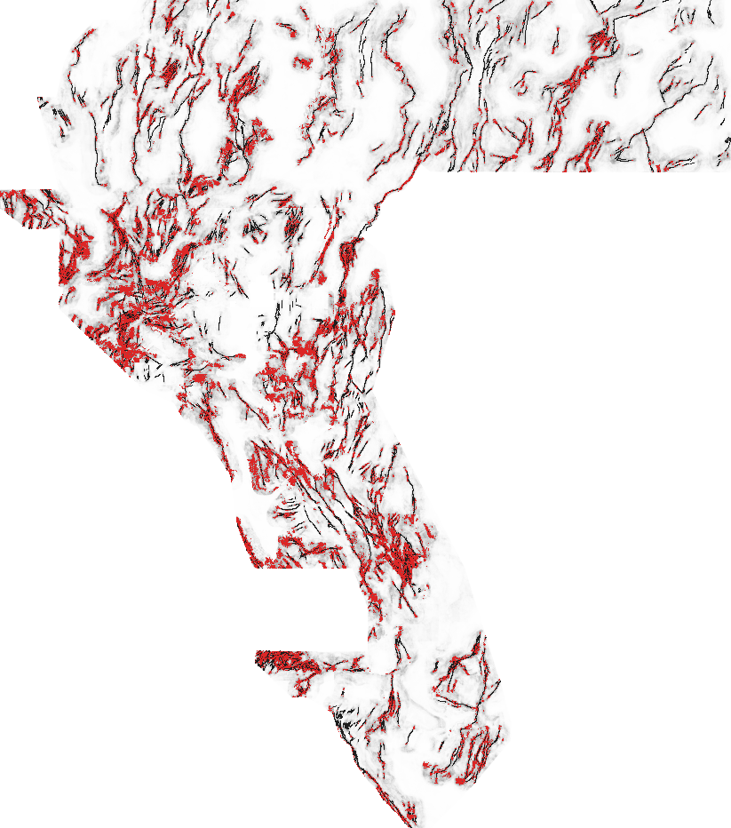

⬇ NEWEST (2026-10-21) · H83-NETSIB submission file — ✅ OK TO DOWNLOAD FOR INSPECTION · ⛔ NOT OK TO SUBMIT
Do not upload. Stopped as preregistered: DUPLICATE logged: final dots exceed the 0.70 forward 3-px overlap limit against 16 informative registry rasters (worst 0.9091; all with |rho| <= 0.083). The holdout result itself was positive (it beat the 0.152718 incumbent by point estimate on both seeds); the only failed gate is the parallel-run duplicate rule. Changing that rule is the project owner's decision (docs/irregularities.md IR-83-01), not this session's.
Fail-closed re-check of the published file at build time: SHA-256 matches the run card and the shared validator passes on the actual bytes.
Download the .tif (135 KB) One-TIFF .zip How it was built & verified → Step-by-step: how to submit →HOLDOUT-DTI 0.1538 (seed 20; 95% CI 0.1357–0.1726; 11,321 withheld positives) and 0.1637 (seed 30; CI 0.1447–0.1847; 11,342), evaluator gems57-pooled-hide-v2. Incumbent 0.152718 (same evaluator, seed 20). CIs overlap: an improvement in point estimate, not a statistically proven one. No leaderboard score is claimed or projected.
File / submission name (51 characters)
gems77-h83-netsib-37654dots-20261021-ed06b51d-zerosNote for the portal (≤140 characters) (126 characters)
H83-NETSIB fault-network sibling/gap/continuation geometry, synthetic re-withholding HGB; 37654 dots sep2.8 >2px off catalogueSHA-256 b2f89a83ffb1080c512bb46c6feae3a6211207cd619e0291bd2d767c002be87f · run card JSON
H83-NETSIB · fault-network sibling / gap / continuation geometry
Hypothesis. Unmapped faults belong to the same organised normal-fault arrays as mapped ones: they lie parallel to mapped traces at characteristic spacing, bridge collinear gaps, or continue along strike. A model trained on synthetic whole-component withholdings of the visible catalogue learns where an absent strand goes; fused with geophysical/topographic evidence it recovers withheld faults better than geophysics alone and better than the incumbent.
Mechanism (frozen preregistration text). From the VISIBLE catalogue only: structure-tensor strike (sigma1=1, sigma2=3 px), 12 strike bins of 15 deg; per bin FFT convolution with oriented kernels: along-strike continuation (|a|<=25 px, lateral sigma 1.5 px, exp(-|a|/12)), forward/backward half kernels combined as bilateral gap sqrt(F*B), parallel-sibling band (4<=|c|<=20 px perpendicular, |a|<=15 px); plus isotropic Gaussian network density at sigma 4/12/32 px, log1p distance-to-visible, and local strike coherence. Training positives = (i) synthetic re-withheld visible components (20% per quadrant, whole 8-connected components, 3 px collar removed from features, 2 independent draws) and (ii) the real withheld components of the OTHER quadrants; features for each row computed from the catalogue state that row would see at test time. Negatives = footprint pixels > 3 px from every catalogue pixel, half within 15 px.
As run: training positives were the synthetic re-withheld components only (2 draws), the base stack has 39 channels, and fold-k negatives avoid every catalogue pixel a fold-k model may know. These differences are recorded as post-hoc amendments IR-83-03 to IR-83-06 in the preregistration and in docs/irregularities.md.
Named non-fault process that could mimic it. Mapping-density bias: dense catalogue where geologists mapped intensively (e.g. around known geothermal fields) – the network prior then predicts more faults where mapping effort, not faulting, was high. Others: Pluvial Lake Lahontan shoreline benches parallel to range fronts – parallel to faults at km spacing, mimic the sibling kernel in topography-gated cells; Bedding/foliation-parallel lithologic contacts in tilted fault blocks (sub-parallel to faults at sub-km spacing).

Experiment 1 — leakage canaries and surface uniqueness
Max single-feature symmetric AUC: seed 20 0.8054 (ns_logdist), seed 30 0.8092 (ns_cont); ceiling 0.90 → PASS. Pre-placement surface Spearman: label-free network score max |ρ| 0.820 (7GEMSDOE:downloads/gems7-halo15-gbt-v1-90fb7dc0fc1f.tif); final candidate surface max |ρ| 0.676 (witness:dense_witness.tif) over 614 unique rasters (limit 0.90).
Experiment 2 — paired hide-and-recover HOLDOUT-DTI
Unmodified shared evaluator gems57-pooled-hide-v2: whole catalogue components withheld (20 % per quadrant, 3 px context collar), every network feature computed from the visible catalogue only, visible faults masked pixel-exactly, pooled DTI (α 0.2, β 0.8, 300 m triangular kernel), 95 % paired spatial-block bootstrap. Identical 37,654-dot emission (Poisson-disk 2.8 px, >2 px from known faults) for every arm.
| Arm | Seed 20 (11,321 withheld) | Seed 30 (11,342 withheld) |
|---|---|---|
| A_netsib_full — preregistered candidate (39 base + 10 network channels) | 0.1538 (0.1357–0.1726) | 0.1637 (0.1447–0.1847) |
| A_base — same rows, 39 base channels only | 0.0780 (0.0613–0.0963) | 0.0840 (0.0676–0.0995) |
| S_netsib_only — 10 network channels only | 0.1577 (0.1422–0.1725) | 0.1658 (0.1495–0.1824) |
| A0_random — uniform random | 0.0445 (0.0395–0.0493) | 0.0469 (0.0413–0.0522) |
Paired Δ candidate − A_base: +0.0758 (CI +0.0598 to +0.0917) and +0.0797 (CI +0.0632 to +0.0986). Network-only vs candidate: Δ candidate − S_netsib_only -0.0039 / -0.0021, CIs include 0 (not swapped post hoc).
Experiment 3 — final build and final-dot uniqueness
615 unique registry rasters compared (812-entry owner-repo index + witnesses + local files). Max |Spearman| of final dots 0.089. Forward 3-px overlap over the 578 rasters where the test is informative: max 0.909 (GEMSDOE3:docs/downloads/coverage-v3-wide-20260925T054019Z-0ac095a7ed.tif). Matched-budget overlap vs dense rasters' top-37,654 pixels: max 0.416. Literal all-raster value 1.000 — reported; 37 firings are rasters whose 3-px halo covers ≥70 % of the domain, where uniformly random dots would also "fail" (IR-83-01).
Duplicate rule: FIRED. 16 informative rasters exceed the 0.70 limit. All of them are wide dot fields (≥77,727 dots) that are rank-uncorrelated with this file (|ρ| ≤ 0.083), but the preregistered rule has no exception for that, so the lane stopped as negative.
Validator on actual bytes: ALL PASS — single_band, dtype_float32, dimensions_3730x3292, crs_epsg_32611, transform_matches_sample_submission, no_nan_anywhere, no_inf_anywhere, no_sentinel_values, range_0_1_guaranteed, min_ge_0, max_le_1, in_footprint_all_finite, in_footprint_range_0_1, outside_footprint_zero, zero_dots_on_mapped_catalogue.
Run card · Exp 1 · Exp 2 · Exp 3 build · preregistration · hypotheses & why H33 scored 0.2778